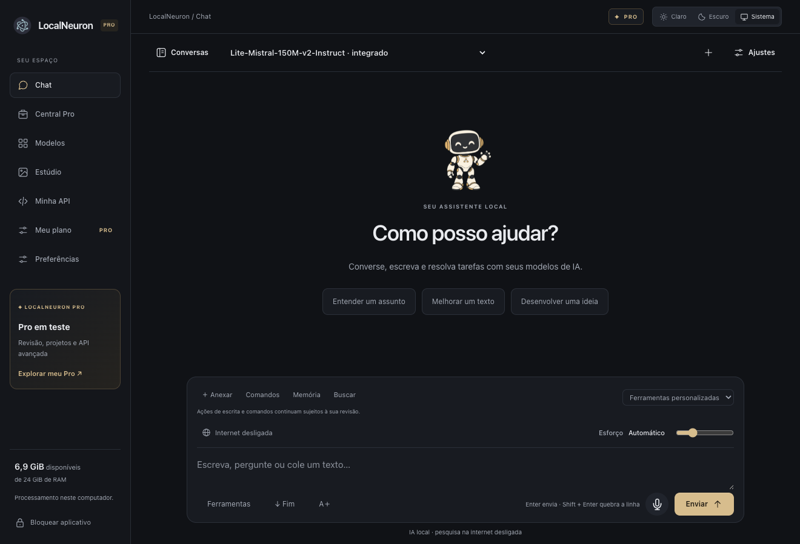

Escolha sua inteligência.
Explore modelos de Qwen, DeepSeek, Gemma e outras famílias. Compare download, memória estimada e compatibilidade antes de instalar.
QwenDeepSeekGemmagpt-oss
A PRÓXIMA ERA DA IA É LOCAL
Os modelos que você escolhe. A potência do seu computador. Um lugar para conversar, programar e criar com IA — do seu jeito.
macOS · Windows · Linux / Versão alfa

MENOS DISTÂNCIA ENTRE IDEIA E CRIAÇÃO
Comece pela configuração guiada: analise seu computador, encontre uma IA compatível e monte sua equipe de bots pessoais e profissionais.
Explore modelos de Qwen, DeepSeek, Gemma e outras famílias. Compare download, memória estimada e compatibilidade antes de instalar.
Organize conversas por modelo ou bot. Crie no Photo, Video e Música. Prepare cortes para o DaVinci Resolve Studio na aba Editor, com revisão antes de aplicar.
Depois de instalar os modelos e motores, use a inferência offline. Quando precisar, habilite a internet, conecte ferramentas MCP ou compartilhe sua IA por API.
PRONTO PARA COMEÇAR?
Escolha seu sistema. Os modelos são baixados separadamente dentro do aplicativo.
Versão alfa em desenvolvimento. A velocidade e os modelos disponíveis dependem do hardware. Os pacotes ainda não têm assinatura de distribuição; seu sistema pode exibir um aviso ao abrir.
O futuro da IA também cabe no seu computador.
↗